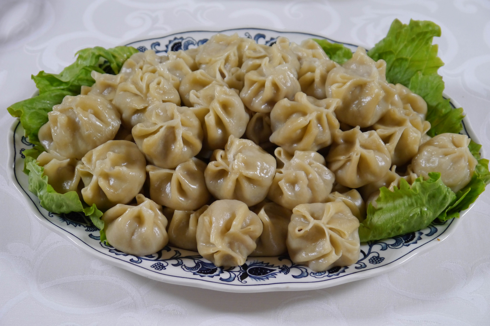

Mongolian Steamed Dumplings (Buuz)

Buuz have all the elements of Mongolian cooking wrapped into one dumpling. They’re usually made with fatty mutton, as is most food in Mongolia. They’re also simply spiced, so the flavors of the meat shine through.
Ingredients
Buuz Wrappers:
- 2 cups flour
- 2/3 cups boiling water
Buuz Filling:
- 450g mutton or fatty labm, preferably ground very coarse
- 1 onion, finely minced
- 2-3 cloves garlic, minced
- 1-2 tsp pepper
- 1 tsp caraway seeds
- 1 tsp salt
- 1-2 tbsp water, optional see note
Steps
- Mix the flour and water together and knead until it forms a smooth dough. A food processor helps bring the dough together in about 30 seconds, but it can also be made by hand.
- Allow the dough to rest under a moistened towel for at least 30 minutes.
- Coarsely grind mutton or fatty lamb and add in remaining ingredients. Stir to incorporate. Omit the added water if you're using pre-ground meat.
- Roll the dumpling wrapper into a long snake and then cut it into 2 dozen pieces. Roll each piece into a 3 inch circle.
- Place a walnut sized piece of meat on each wrapper, and pinch the ends of the wrapper together in your desired shape.
- Steam the dumplings for about 20 minutes in a steamer basket inside a pot with a tight fitting lid (or in an instant pot with a glass lid).
- Serve buuz as an appetizer or a main meal.